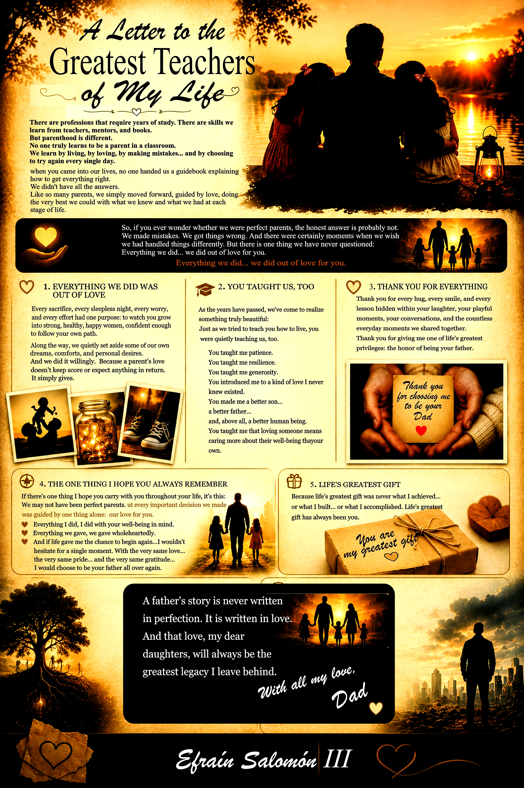

A father's story is not written with perfection, it is written with love
An intimate letter to those who taught me that the greatest gift was you.

"The greatest gift life gave me was not what I achieved, but you. With all my love, Dad."